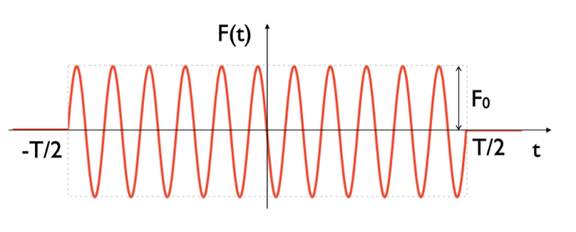
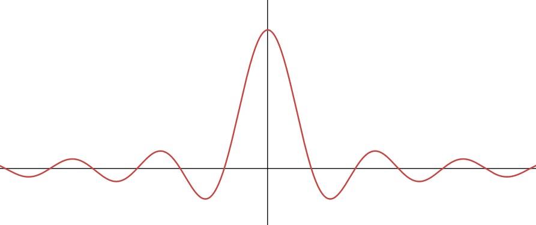
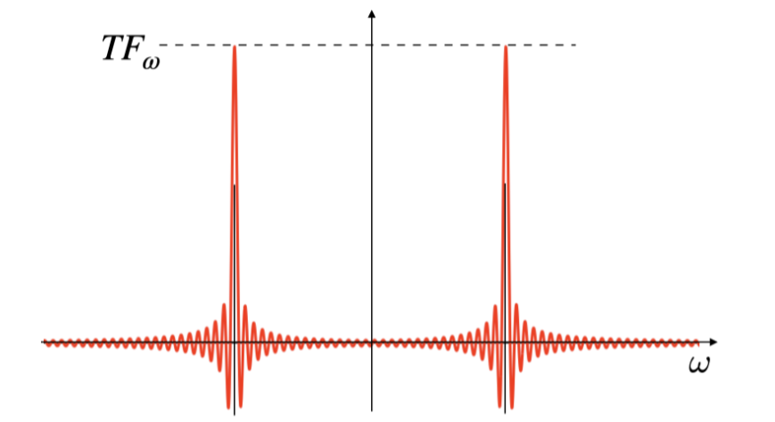

Time-Dependent Perturbation Theory
In interaction representation we saw that: \[ i\hbar\partial_t||\psi_I(t)\rangle = \hat H'_I(t)|\psi_I(t)\rangle \] where the interaction representation of the wavefunction, \(|\psi_I(t)\rangle\) is \(e^{i\hat H_0t/\hbar}|\psi(t)\rangle\) and \(\hat H'_I(t) = e^{i\hat H_0 t/\hbar}\hat H'(t)e^{-i\hat H_0 t/\hbar}\). If we take the integal of this TDSE over some time interval from \(t_0\) to \(t\), we get the following: \[\begin{align} \int_{t_0}^t dt_1 i\hbar\partial_{t_1}|\psi_I(t_1)\rangle &= \int_{t_0}^t dt_1 \hat H'_I(t_1)|\psi_I(t_1)\rangle \\ i\hbar\left( |\psi_I(t)\rangle - |\psi_I(t_0)\rangle\right) &= \int_{t_0}^t dt_1 \hat H'_I(t_1)|\psi_I(t_1)\rangle \\ |\psi_I(t)\rangle - |\psi_I(t_0)\rangle &= \frac{1}{i\hbar}\int_{t_0}^t dt_1 \hat H'_I(t_1)|\psi_I(t_1)\rangle \\ |\psi_I(t)\rangle &= |\psi_I(t_0)\rangle + \frac{1}{i\hbar}\int_{t_0}^t dt_1 \hat H'_I(t_1)|\psi_I(t_1)\rangle \\ \end{align}\] where we have \(|\psi_I(t)\rangle\) on both the left and right hand side of the final equation. We can recursively substitute in the expression on the right hand side for its \(|\psi_I(t)\rangle\) component: \[\begin{align} |\psi_I(t_1)\rangle &= |\psi_I(t_0)\rangle + \frac{1}{i\hbar}\int_{t_0}^{t_1} dt_2 \hat H'_I(t_2)|\psi_I(t_2)\rangle \\ |\psi_I(t)\rangle &= |\psi_I(t_0)\rangle + \frac{1}{i\hbar}\int_{t_0}^t dt_1 \hat H'_I(t_1)|\psi_I(t_1)\rangle \\ &= |\psi_I(t_0)\rangle + \frac{1}{i\hbar}\int_{t_0}^t dt_1 \hat H'_I(t_1) \left\{|\psi_I(t_0)\rangle + \frac{1}{i\hbar}\int_{t_0}^{t_1} dt_2 \hat H'_I(t_2)|\psi_I(t_2)\rangle \right\} \\ &= |\psi_I(t_0)\rangle + \frac{1}{i\hbar}\int_{t_0}^t dt_1 \hat H'_I(t_1) |\psi_I(t_0)\rangle + \frac{1}{i\hbar}\int_{t_0}^t dt_1 \hat H'_I(t_1) \frac{1}{i\hbar}\int_{t_0}^{t_1} dt_2 \hat H'_I(t_2)|\psi_I(t_2)\rangle \\ &= |\psi_I(t_0)\rangle + \frac{1}{i\hbar}\int_{t_0}^t dt_1 \hat H'_I(t_1) |\psi_I(t_0)\rangle - \frac{1}{\hbar^2}\int_{t_0}^t dt_1 \int_{t_0}^{t_1} dt_2 \hat H'_I(t_1) \hat H'_I(t_2)|\psi_I(t_2)\rangle \\ |\psi_I(t_2)\rangle &= |\psi_I(t_0)\rangle + \frac{1}{i\hbar}\int_{t_0}^{t_2} dt_3 \hat H'_I(t_3)|\psi_I(t_3)\rangle \\ \psi_I(t)\rangle &= |\psi_I(t_0)\rangle + \frac{1}{i\hbar}\int_{t_0}^t dt_1 \hat H'_I(t_1) |\psi_I(t_0)\rangle - \frac{1}{\hbar^2}\int_{t_0}^t dt_1 \int_{t_0}^{t_1} dt_2 \hat H'_I(t_1) \hat H'_I(t_2)\left\{|\psi_I(t_0)\rangle + \frac{1}{i\hbar}\int_{t_0}^{t_2} dt_3 \hat H'_I(t_3)|\psi_I(t_3)\rangle\right\} \\ &= |\psi_I(t_0)\rangle + \frac{1}{i\hbar}\int_{t_0}^t dt_1 \hat H'_I(t_1) |\psi_I(t_0)\rangle - \frac{1}{\hbar^2}\int_{t_0}^t dt_1 \int_{t_0}^{t_1} dt_2 \hat H'_I(t_1) \hat H'_I(t_2)|\psi_I(t_0)\rangle + (\frac{1}{i\hbar})^3\int_{t_0}^t dt_1 \int_{t_0}^{t_1} dt_2 \int_{t_0}^{t_2} dt_3 \hat H'_I(t_1) \hat H'_I(t_2) \hat H'_I(t_3)|\psi_I(t_3)\rangle \\ \cdots \end{align}\] Doing this substitution infinitely yields: \[\begin{align} |\psi_I(t)\rangle &= \sum_{n=0}^\infty|\psi_I^{(n)}(t)\rangle \\ |\psi_I^{(n)}(t)\rangle &= \left[ (\frac{1}{i\hbar})^n \int_{t_0}^t dt_1\int_{t_0}^{t_1} dt_2 \cdots \int_{t_0}^{t_{n-1}} dt_n \hat H'_I(t_1)\hat H'_I(t_2)\cdots \hat H'_I(t_n)\right]|\psi_I(t_0)\rangle \end{align}\] This is known as the Dyson Series. Note the similarity here to perturbative expansion where, e.g., the first order correction is: \[ |\psi_I^{(1)}(t)\rangle = \frac{1}{i\hbar}\int_{t_0}^t dt_1 \hat H'_I(t_1)|\psi_I(t_0)\rangle \] the second order is \(|\psi_I^{(2)}(t)\rangle\), and so on. If this series converges quickly within the tine interval of interest, you can truncate the series and predict the transition amplitude between any two states of the unperturbed Hamiltonian, \(|i\rangle\) and \(|f\rangle\) such that \(\hat H_0|i\rangle = E_i|i\rangle\) and \(\hat H_0|f\rangle = E_f|f\rangle\). This transition amplitude is: \[ \mathcal A_{f\leftarrow i} = \langle f|\psi_I(t)\rangle, \text{ where } |\psi_I(t_0)\rangle = |i\rangle \] which can be broken down into: \[ \mathcal A_{f\leftarrow i} = \mathcal A_{f\leftarrow i}^{(0)} + \mathcal A_{f\leftarrow i}^{(1)} + \mathcal A_{f\leftarrow i}^{(2)} + \cdots, \text{ where } \mathcal A_{f\leftarrow i}^{(1)} = \langle f | \psi_I^{(n)}(t)\rangle \]First-Order TDPT (One-Photon Transition)
We now see how to determine the single-photon transition amplitude, \(\mathcal A_{f\leftarrow i}^{(1)}\). \[\begin{align} \mathcal A_{f\leftarrow i}^{(1)} &= \langle f | \psi^{(1)}_I(t)\rangle \\ &= \langle f | \frac{1}{i\hbar}\int_{t_0}^t dt_1 \hat H'_I(t_1)|\psi_I(t_0)\rangle \\ &= \frac{1}{i\hbar}\int_{t_0}^t dt_1 \langle f |e^{i\hat H_0 t_1/\hbar}\hat H'(t_1)e^{-i\hat H_0 t_1/\hbar}|i\rangle \\ &= \frac{1}{i\hbar}\int_{t_0}^t dt_1 e^{i E_f t_1/\hbar} \langle f |\hat H'(t_1)|i\rangle e^{-i E_i t_1/\hbar} \\ &= \frac{1}{i\hbar}\int_{t_0}^t dt_1 e^{i (E_f-E_i) t_1/\hbar} \langle f |\hat H'(t_1)|i\rangle \\ \end{align}\] If we define \(\omega_{ab} = \frac{E_a - E_b}{\hbar}\) and write matrix element \(\langle f |\hat H'(t_1)|i\rangle\) as \(H'_{fi}(t_1)\): \[\begin{align} \mathcal A_{f\leftarrow i}^{(1)} &= \frac{1}{i\hbar}\int_{t_0}^t dt_1 e^{i \omega_{fi} t_1} H'_{fi}(t_1) \\ \end{align}\] We consider the case where the perturbation is finite; that is, the perturbation is 0 at all times \(t_1 \lt t_0\) and 0 at all times \(t_1 \gt t\). This allows us to expand our bounds of integral to \(\pm\infty\) and replace our integral with the Fourier transform of \(H'_{fi}(t)\). We use the convention that: \[\begin{align} \tilde F(\omega) &= \int_{-\infty}^\infty e^{i\omega t} F(t) dt \\ F(t) &= \frac{1}{2\pi}\int_{-\infty}^\infty e^{-i\omega t} \tilde F(\omega) d\omega \end{align}\] So, \[ \mathcal A_{f\leftarrow i}^{(1)} = \frac{1}{i\hbar}\tilde H'_{fi}(\omega_{fi}) \] We assume that the time-dependent perturbation \(\hat H'(t) \) can be written as a time-dependent field and a time-independent operator, or that: \[ \hat H'(t) = F(t)\hat O \] if this were not the case, it would instead be a sum of many different \(F(t)\hat O\)'s. This means that \(H'_{fi}(t) = \langle f | F(t)\hat O|i\rangle\), and that its Fourier transform is \(\tilde H'_{fi}(\omega_{fi}) = \langle f|\tilde F(\omega_{fi})\hat O|i\rangle\). Or, since \(\tilde F(\omega)_{fi}\) is not an operator, \(\tilde H'_{fi}(\omega_{fi}) = \tilde F(\omega_{fi})\langle f|\hat O|i\rangle\). Using this in our transition amplitude: \[\begin{align} \mathcal A_{f\leftarrow i}^{(1)} &= \frac{1}{i\hbar}\tilde F(\omega_{fi})\langle f|\hat O|i\rangle \\ &= \frac{1}{i\hbar}\tilde F(\omega_{fi})O_{fi} \tag{1}\\ \end{align}\] Depending on the external field and the gauge you're using, \(F(t)\) and \(\hat O\) will be different. For example, in length gauge, \(\hat H(t) = -\mathcal E(t)\hat \epsilon\cdot\hat{\vec \mu}\), where \(\hat\epsilon\) is the unit vector describing the polarization of the field. This means that \(F(t) \to -\mathcal E(t)\) and \(\hat\epsilon\cdot\hat{\vec\mu} \to \hat O\).The specific case of the flat-top pulse. Let's look at the case of the flat-top pulse, where we have a finite pulse from time \(-T/2\) to \(T/2\) with constant amplitude \(F_0\) and frequency \(\omega_0\). \[ F(t) = F_0\cos(\omega_0 t + \phi) = \frac{1}{2} F_0 e^{i\phi}e^{i\omega_0 t} + \frac{1}{2} F_0 e^{-i\phi}e^{-i\omega_0 t} \] which looks like:

Note that for simplicity, we often use the dipole approximation which says that the spatial modulation of the external field across the particle is neglected-- though in reality the particle experiences varying intensities of the field as \(\phi\) varies, we ignore this, and essentially just say that \(\phi=0\).
In this case, however, we sweep the \(e^{i\phi}\) terms under the rug and define \(F_{\omega_0} = \frac{1}{2} F_0 e^{i\phi}\) which gives us: \[ F(t) = F_0\cos(\omega_0 t + \phi) = F_{\omega_0}e^{i\omega_0 t} + F_{\omega_0}^*e^{-i\omega_0 t} \] Because this pulse is restricted to a finite time interval, we can once again apply the Fourier transform directly: \[\begin{align} \tilde F(\omega_{fi}) &= \int_{-\infty}^\infty e^{i\omega_{fi} t} \left( F_{\omega_0}e^{i\omega_0 t} + F_{\omega_0}^*e^{-i\omega_0 t}\right ) dt \\ &= \int_{-\infty}^\infty e^{i\omega_{fi} t} F_{\omega_0}e^{i\omega_0 t} dt + \int_{-\infty}^\infty e^{i\omega_{fi} t} F_{\omega_0}^*e^{-i\omega_0 t} dt \\ &= F_{\omega_0} \int_{-\infty}^\infty e^{i (\omega_{fi}+\omega_0) t} dt + F_{\omega_0}^* \int_{-\infty}^\infty e^{i(\omega_{fi}-\omega_0) t} dt \\ &= F_{\omega_0} \frac{e^{i(\omega_0+\omega_{fi})T/2} - e^{-i(\omega_0+\omega_{fi})T/2}}{i(\omega_0+\omega_{fi})} + F_{\omega_0}^* \frac{e^{i(\omega_{fi}-\omega_0)T/2} - e^{-i(\omega_{fi}-\omega_0)T/2}}{i(\omega_0+\omega_{fi})} \\ &= 2F_{\omega_0} \frac{e^{i(\omega_0+\omega_{fi})T/2} - e^{-i(\omega_0+\omega_{fi})T/2}}{2i(\omega_0+\omega_{fi})} + 2F_{\omega_0}^* \frac{e^{i(\omega_{fi}-\omega_0)T/2} - e^{-i(\omega_{fi}-\omega_0)T/2}}{2i(\omega_0+\omega_{fi})} \\ &= 2F_{\omega_0} \frac{\sin((\omega_{fi}+\omega_0)T/2)}{\omega_0+\omega_{fi}} + 2F_{\omega_0}^* \frac{\sin((\omega_{fi}-\omega_0)T/2)}{\omega_0-\omega_{fi}} \end{align}\] This is fine to use as our expression for We can show that for large values of \(T\), \(\frac{\sin((\omega_{fi}\pm\omega_0)T/2)}{\omega_0\pm\omega}\) are delta-like functions.
Generally, the plot of \(\frac{\sin(ax)}{x}\) looks like:

First, notice that we're taking the integral over \(-\infty\to\infty\) on the real axis. We can extend our path of integration into the imaginary plane and form a loop. The integral of this loop is the sum of the integral of its components, so if we later take some limit that brings our newly-introduced complex component to 0, the integral over the loop is really just the integral over the real axis only. \[ \int_{-\infty}^\infty \frac{\sin(x)}{x} dx = \lim_{\epsilon\to 0+}\int_{-\infty}^\infty \frac{\sin(x)}{x + i\epsilon} dx = \frac{1}{2i}\lim_{\epsilon\to 0+}\left\{\int_{-\infty}^\infty \frac{e^{-ix}}{x + i\epsilon} dx - \int_{-\infty}^\infty \frac{e^{ix}}{x + i\epsilon} dx\right\} \] A circle on the complex plane has form \(Re^{iz}\) which is indeed the form of our integrand. However, since we integrate over the real axis and are forming a loop, we aren't integrating over a perfect circle, but a circle that is bisected by the x-axis, or the real axis. This means our loop is really a half circle.
Furthermore, we have one term with \(e^{ix}\) and another with \(e^{-ix}\); these correspond to circles drawn out counterclockwise and clockwise, respectively. Hence the the \(e^{ix}\) corresponds to a half circle above the real axis, and the \(e^{-ix}\) term corresponds to a half circle below the real axis.
Now, when \(x = -i\epsilon\), the denominators of our integrands are 0; we cannot just assume that the integral of our loop is 0. For this, we use the residual theorem: \[ \oint \frac{f(z)dz}{z-z_0} = 2\pi i f(z_0) \] this means that: \[ \int \frac{e^{-ix}}{x + i\epsilon} dx = 2\pi i e^{-i(-i\epsilon)}=2\pi i e^{-\epsilon} \] Because this pole does not exist in the loop that \(\int \frac{e^{ix}}{x + i\epsilon} dx\) walks, the integral is still 0. Plugging this back into our integral: \[\begin{align} \int_{-\infty}^\infty \frac{\sin(x)}{x} dx &= \frac{1}{2i}\lim_{\epsilon\to 0+}\left\{\int_{-\infty}^\infty \frac{e^{-ix}}{x + i\epsilon} dx - \int_{-\infty}^\infty \frac{e^{ix}}{x + i\epsilon} dx\right\} \\ &= \frac{1}{2i}\lim_{\epsilon\to 0+}\left\{2\pi i e^{-\epsilon} - 0 \right\} \\ &= \pi\lim_{\epsilon\to 0+}e^{-\epsilon} \\ &= \pi \\ \end{align}\] Plugging this back in finally to the overall equation: \[\begin{align} \int_{-\infty}^\infty \frac{\sin((\omega T/2))}{\omega}f(\omega)d\omega &= \pi f(0) \end{align}\] which tells us that \(\frac{\sin(\omega T/2)}{\omega}\) is similar to \(\pi\delta(\omega)\) for large values of \(T\), or that: \[ \frac{\sin(\omega T/2)}{\pi\omega}\stackrel{T\to\infty}{\to}\delta(\omega) \] we finally define: \[ \delta_T(\omega) = \frac{\sin(\omega T/2)}{\pi\omega} \] and use this in our expression for \(\tilde F(\omega)\): \[ \tilde F(\omega_{fi}) = 2\pi F_{\omega_0}\delta_T(\omega_{fi} + \omega_0) + 2\pi F_{w_0}^*\delta_T(\omega_{fi} - \omega_0) \] and then use \(\tilde F(\omega_{fi})\) in (1): \[\begin{align} \mathcal A^{(1)}_{f\leftarrow i} &= \frac{1}{i\hbar}O_{fi}\left[2\pi F_{\omega_0}\delta_T(\omega_{fi} + \omega_0) + 2\pi F_{w_0}^*\delta_T(\omega_{fi} - \omega_0)\right] \\ &= \frac{2\pi}{i\hbar}O_{fi}\left[F_{\omega_0}\delta_T(\omega_{fi} + \omega_0) + F_{w_0}^*\delta_T(\omega_{fi} - \omega_0)\right] \tag{2} \end{align}\] Remember that \(\omega_0\) is the frequency of the external field and that \(\omega_{fi}\) is the frequency needed to have the energy to transition from \(|i\rangle\) to \(|f\rangle\). In order for this transition amplitude to be non-zero, the frequency of the field needs to either be \(\omega_{fi}\) or \(-\omega_{fi}\). If the external field has frequency \(\omega_0 = \omega_{fi}\), then \(\omega_0 = \omega_{fi} = \omega_f - \omega_i\), or in other words, \(\omega_f = \omega_i + \omega_0\). If the external field has frequency \(\omega_0 = -\omega_{fi}\), then \(\omega_0 = -\omega_{fi} = -\omega_f + \omega_i\), or in other words, \(\omega_f = \omega_i - \omega_0\).
As such, it becomes clear that our second term in the transition amplitude corresponds to absorption, because we enter a state with higher energy, while the first corresponds to emission, specificlaly stimulated emission, because we enter a state with lower energy.
Transition Probability. The transition probability (to first order) in the case of the flat-top pulse is, of course, the square modulus of the transition amplitude: \[\begin{align} p_{f\leftarrow i}^{(1)} &= |\mathcal A_{f\leftarrow i}^{(1)}|^2 \\ &= |\frac{2\pi}{i\hbar}O_{fi}F_{\omega_0}^2\left[\delta_T(\omega_{fi} + \omega_0) + \delta_T(\omega_{fi} - \omega_0)\right]|^2 \\ &= \frac{4\pi^2}{\hbar^2}|O_{fi}|^2 \frac{F_0^2}{4} \left[ \delta_T^2(\omega_{fi} + \omega_0) + 2 \delta_T(\omega_{fi} + \omega_0)\delta_T(\omega_{fi} - \omega_0) + \delta_T^2(\omega_{fi} - \omega_0)\right] \\ &= \frac{F_0^2\pi^2}{\hbar^2}|O_{fi}|^2\left[\delta_T^2(\omega_{fi} + \omega_0) + 0 + \delta_T^2(\omega_{fi} - \omega_0)\right] \\ \end{align}\] where we take \(F_{\omega_0} = \frac{1}{2}F_0e^{i\phi} = \frac{1}{2}F_0\) as real (so \(\phi\) is always equal to 0). Unlike the actual delta function (which is, in fact, not a function but a distribution), we can take the square of \(\delta_T(\omega)\).
It turns out (perhaps unsurprisingly) that \(\delta_T^2(\omega)\) also approximates the delta function for large \(T\), which we can demonstrate as follows: \[\begin{align} \int_{-\infty}^\infty \delta_T^2(\omega) d\omega &= \int_{-\infty}^\infty (\frac{\sin(\omega T/2)}{\pi\omega})^2 d\omega = \frac{1}{\pi^2}\int_{-\infty}^\infty\frac{\sin^2(\omega T/2)}{\omega^2} d\omega \\ &= \frac{1}{\pi^2}\lim_{\lambda\to 0^+}\int_{-\infty}^\infty\frac{\sin^2(\omega T/2)}{\omega^2 + \lambda^2} d\omega \\ &= \frac{1}{\pi^2}\lim_{\lambda\to 0^+}\int_{-\infty}^\infty\frac{(e^{i\omega T/2}-e^{-i\omega T/2})^2}{(2i)^2(\omega^2 + \lambda^2)} d\omega \\ &= -\frac{1}{4\pi^2}\lim_{\lambda\to 0^+}\int_{-\infty}^\infty\frac{e^{i\omega T} - 2e^{i\omega T/2}e^{-i\omega T/2} + e^{-i\omega T}}{(\omega^2 + \lambda^2)} d\omega \\ &= -\frac{1}{4\pi^2}\lim_{\lambda\to 0^+}\int_{-\infty}^\infty\frac{e^{i\omega T} - 2 + e^{-i\omega T}}{(\omega^2 + \lambda^2)} d\omega \\ &= -\frac{1}{4\pi^2}\lim_{\lambda\to 0^+}\left\{\int_{-\infty}^\infty-\frac{2}{(\omega^2 + \lambda^2)}d\omega + \int_{-\infty}^\infty\frac{e^{i\omega T}}{(\omega^2 + \lambda^2)}d\omega + \int_{-\infty}^\infty\frac{e^{-i\omega T}}{(\omega^2 + \lambda^2)}d\omega \right\} \\ &= -\frac{1}{4\pi^2}\lim_{\lambda\to 0^+}\left\{-2[\frac{\arctan(\omega/\lambda)}{\lambda}]_{-\infty}^\infty + \int_{-\infty}^\infty\frac{e^{i\omega T}}{(\omega^2 + \lambda^2)}d\omega + c.c. \right\} \\ &= -\frac{1}{4\pi^2}\lim_{\lambda\to 0^+}\left\{-\frac{2\pi}{\lambda} + \int_{-\infty}^\infty\frac{e^{i\omega T}}{(\omega^2 + \lambda^2)}d\omega + c.c. \right\} \\ \end{align}\] In order to compute \( \int_{-\infty}^\infty\frac{e^{2i\omega T/2}}{(\omega^2 + \lambda^2)}\) we need to use Cauchy integration again. If \(\omega = \pm i\lambda\), the denominator is 0, but since we're specifically taking the limit as \(\lambda\to 0^+\) and \(\lambda\) is strictly positive, \(\omega\) can only equal \(+i\lambda\). Skipping straight to using the residual: \[\begin{align} \int_{-\infty}^\infty\frac{e^{i\omega T}}{(\omega^2 + \lambda^2)}d\omega &= \int_{-\infty}^\infty\frac{e^{i\omega T}}{(\omega+i\lambda)(\omega - i\lambda)}d\omega \\ f(z) = \frac{e^{i\omega T}}{\omega + i\lambda} \text{ and } z-z_0 = \omega - i\lambda &\implies \int_{-\infty}^\infty\frac{e^{i\omega T}}{(\omega+i\lambda)(\omega - i\lambda)}d\omega = 2\pi i \frac{e^{i(i\lambda)T}}{(i\lambda) + i\lambda} \\ \int_{-\infty}^\infty\frac{e^{i\omega T}}{(\omega+i\lambda)(\omega - i\lambda)}d\omega &= 2\pi i \frac{e^{-\lambda T}}{2i\lambda} \\ &= \pi\frac{e^{-\lambda T}}{\lambda} \end{align}\] This result is real, so the complex conjugate is exactly the same. Hence we have: \[\begin{align} \int_{-\infty}^\infty \delta_T^2(\omega) d\omega &= -\frac{1}{4\pi^2}\lim_{\lambda\to 0^+}\left\{-\frac{2\pi}{\lambda} + \int_{-\infty}^\infty\frac{e^{i\omega T}}{(\omega^2 + \lambda^2)}d\omega + c.c. \right\} \\ &= \frac{1}{4\pi^2}\lim_{\lambda\to 0^+}\left\{\frac{2\pi}{\lambda} - \pi\frac{e^{-\lambda T}}{\lambda} - \pi\frac{e^{-\lambda T}}{\lambda} \right\} \\ &= \frac{1}{4\pi^2}\lim_{\lambda\to 0^+}\left\{2\pi \frac{1 - e^{-\lambda T}}{\lambda} \right\} \\ &= \frac{1}{2\pi}\lim_{\lambda\to 0^+}\left\{\frac{1 - e^{-\lambda T}}{\lambda} \right\} \\ \end{align}\] We could use L'Hôpital's rule to calculate this limit, or we could simply use the infinitesimal expansion of \(e^{-\lambda T}\): \[ \frac{1}{2\pi}\lim_{\lambda\to 0^+}\left\{\frac{1 - e^{-\lambda T}}{\lambda} \right\} \\ = \frac{1}{2\pi}\frac{1 - (1 - \lambda T + o(\lambda^2)) }{\lambda} = \frac{T}{2\pi} \] So, we now know that \[\begin{align} \int_{-\infty}^\infty \delta_T^2(\omega) d\omega &= \frac{T}{2\pi} \\ &\approx \frac{T}{2\pi}\delta(\omega) \end{align}\] Use this in the transition probabilioty equation to get: \[\begin{align} p_{f\leftarrow i}^{(1)} &= \frac{F_0^2\pi^2}{\hbar^2}|O_{fi}|^2\left[\delta_T^2(\omega_{fi} + \omega_0) + 0 + \delta_T^2(\omega_{fi} - \omega_0)\right] \\ &= \frac{F_0^2\pi^2}{\hbar^2}|O_{fi}|^2 \frac{T}{2\pi} \left[\delta(\omega_{fi} + \omega_0) + \delta(\omega_{fi} - \omega_0)\right] \\ &= \frac{T\pi}{2\hbar^2} |O_{fi}|^2 F_0^2 \left[\delta(\omega_{fi} + \omega_0) + \delta(\omega_{fi} - \omega_0)\right] \tag{3} \\ \end{align}\] Evidently, the transition probability scales linearly with exposure time \(T\); the longer the duration of the pulse, the larger the probability.
Transition rate and cross-section. Because the transition probability scales linearly with \(T\), we can define transition rate: \[ W_{f\leftarrow i}^{(1)} = \frac{p_{f\leftarrow i}^{(1)}}{T} = \frac{\pi}{2\hbar^2} |O_{fi}|^2 F_0^2 \left[\delta(\omega_{fi} + \omega_0) + \delta(\omega_{fi} - \omega_0)\right] \\ \] Notice that this rate dpeends on the intensity of the field, \(F_0\). If we want, we can remove this dependence. For example, say that we not have a flat-top pulse, but that we also have: \[ \hat H'(t) = -\vec{\mathcal E}(t)\cdot\hat{\vec \mu}, \vec {\mathcal E}(t) = \mathcal E(t)\cdot\hat z \] Because we have a flat-top pulse, we know that \(\mathcal E (t) = \mathcal E_0\cos(\omega_0 t)\) for \(|t| \lt T/2\) (which means our \(F_0^2\) is equal to \(\mathcal E_0^2\)).
The energy density of a field in Gauss units is \(\rho = \frac{1}{8\pi}(E_\perp^2 + B^2) = \frac{2}{8\pi}E^2_\perp\), in a monochromatic field where the amplitudes of the electric and magnetic fields are equal. We find the average energy density over exactly one period, \(\frac{2\pi}{\omega}\) by doing: \[ \frac{1}{T}\int_0^T\rho(t) dt = \frac{\omega}{2\pi}\int_0^{2\pi/\omega}\frac{2}{8\pi}E^2_\perp(t) dt = \frac{\omega}{2\pi}\frac{2}{8\pi}\int_0^{2\pi/\omega} \mathcal E_0^2\cos^2(\omega t) dt = \cdots = \frac{\mathcal E_0^2}{8\pi} \] This allows us to write the energy current \(\vec j\) as the average energy density moving at the speed of light \(c\) in direction \(\hat k\): \[\vec j = \hat k \frac{\mathcal E_0^2 c}{8\pi}\] we can then define the density flux of energy through a surface perpendicular to the motion of this light/external field-- in other words, the amount of energy that passes through a unit of area over a unit of time: \[ \Phi_{E_n} = \frac{\mathcal E_0^2}{8\pi}c \] and we can also define the photon flux, if we define each "quanta" of energy to be \(\hbar\omega\): \[ \Phi_N = \frac{\Phi_{E_n}}{\hbar\omega} = \frac{\mathcal E_0^2 c}{8\pi\hbar\omega} \] This is the number of photons passing through a unit area for some unit of time. so, we can define \(F_0^2 = \mathcal E_0^2\) as: \[ \mathcal E_0^2 = \frac{8\pi\hbar\omega}{c} \Phi_N \] and use this in the expression for the transition rate: \[ W_{f\leftarrow i}^{(1)} = \frac{\pi}{2\hbar^2} |O_{fi}|^2 \frac{8\pi\hbar\omega}{c} \Phi_N \left[\delta(\omega_{fi} + \omega_0) + \delta(\omega_{fi} - \omega_0)\right] \\ \] If we want to be really sweaty and work with something that does not involve the field at all, we can define the excitation-cross section: \[ \sigma^{(1)}_{f\leftarrow i} \equiv \frac{W^{(1)}_{f\leftarrow i}}{\Phi} = \frac{\pi}{2\hbar^2} |O_{fi}|^2 \frac{8\pi\hbar\omega}{c} \left[\delta(\omega_{fi} + \omega_0) + \delta(\omega_{fi} - \omega_0)\right] \\ \] which we can simplify using \(\delta(\hbar\omega) = \delta(\omega)/\hbar\): \[\begin{align} \sigma^{(1)}_{f\leftarrow i} &= \frac{4\pi^2\omega}{c} |O_{fi}|^2 \left[\delta(\omega_{fi} + \omega_0) + \delta(\omega_{fi} - \omega_0)\right]/\hbar \\ &= \frac{4\pi^2\omega}{c} |O_{fi}|^2 \left[\delta(E_f - E_i + \hbar\omega_0) + \delta(E_f - E_i - \hbar\omega_0)\right] \end{align}\] What if the the final state is in the continuum? Continuum states \(|E\rangle\) are normalized with \(\langle E|E'\rangle = \delta(E-E')\). Because \(\int\delta(x-x_0)f(x)dx = f(x_0)\), \(\delta(x-x_0)dx\) must be dimensionless, which means that \(\delta(x)\) has units \(1/[x]\). This means that \(\langle E|E'\rangle\) has units of \(1/[\text{energy}]\) and that transition probability: \[ p_{f\leftarrow i}^{(1)} = \frac{T\pi}{2\hbar^2} |O_{fi}|^2 F_0^2 \left[\delta(\omega_{fi} + \omega_0) + \delta(\omega_{fi} - \omega_0)\right] \] really has units of \(1/[\text{energy}]^2\), because \(|O_{fi}|^2 = |\langle f | \hat O|i\rangle|^2\) has units of \(1/[\text{energy}]^2\). Thus the transition probability is reallt the transition probability density: \[ \frac{p_{f\leftarrow i}^{(1)}}{dE_f} = \frac{T\pi}{2\hbar^2} |O_{fi}|^2 F_0^2 \left[\delta(\omega_{fi} + \omega_0) + \delta(\omega_{fi} - \omega_0)\right] \] and the excitation cross-section also becomes: \[\begin{align} \frac{\sigma^{(1)}_{f\leftarrow i}}{dE_f} &= \frac{4\pi^2\omega}{c} |O_{fi}|^2 \left[\delta(E_f - E_i + \hbar\omega_0) + \delta(E_f - E_i - \hbar\omega_0)\right] \end{align}\] to find the actual transition probability or excitation cross-section, you would have to the the integral over \(dE\), e.g. in the case of absorption: \[\begin{align} \int \frac{\sigma^{(1)}_{f\leftarrow i}}{dE_f} dE_f &= \int \frac{4\pi^2\omega}{c} |O_{fi}|^2 \left[\delta(E_f - E_i - \hbar\omega_0)\right] dE_f \\ &= \frac{4\pi^2\omega}{c} |\langle E_f = E_i + \hbar\omega_0|\hat O|i\rangle|^2 \end{align}\]
Second-Order TDPT (Two-Photon Transition)
The second-order transition amplitude is: \[ \mathcal A^{(2)}_{f\leftarrow i} = \langle f | \psi_I^{(2)} (t)\rangle = \langle f | \left\{- \frac{1}{\hbar^2}\int_{t_0}^t dt_1 \int_{t_0}^{t_1} dt_2 \hat H'_I(t_1) \hat H'_I(t_2)|\psi_I(t_0)\rangle\right\} \] We can begin to solve this just like how we solved for the expression for the first-order transition amplitude. \[\begin{align} \hat H'_I(t) &= e^{i\hat H_0 t\hbar}F(t)\hat Oe^{-i\hat H_0 t/\hbar} \\ \mathcal A^{(2)}_{f\leftarrow i} &= - \frac{1}{\hbar^2}\int_{t_0}^t dt_1 \int_{t_0}^{t_1} dt_2 \langle f | \hat H'_I(t_1) \hat H'_I(t_2)|\psi_I(t_0)\rangle \\ &= - \frac{1}{\hbar^2}\int_{t_0}^t dt_1 \int_{t_0}^{t_1} dt_2 \langle f | e^{i\hat H_0 t_1\hbar}F(t_1)\hat Oe^{-i\hat H_0 t_1/\hbar} e^{i\hat H_0 t_2\hbar}F(t_2)\hat Oe^{-i\hat H_0 t_2/\hbar}|i\rangle \\ &= - \frac{1}{\hbar^2}\int_{t_0}^t dt_1 \int_{t_0}^{t_1} dt_2 e^{i\hat E_f t_1\hbar} \langle f | F(t_1)\hat Oe^{-i\hat H_0 t_1/\hbar} e^{i\hat H_0 t_2\hbar}F(t_2)\hat O|i\rangle e^{-i\hat E_i t_2/\hbar} \\ &\text{Insert the resolution of identity} \\ &= - \frac{1}{\hbar^2}\sum_j\int_{t_0}^t dt_1 \int_{t_0}^{t_1} dt_2 e^{i\hat E_f t_1\hbar} \langle f | F(t_1)\hat O|j\rangle\langle j|e^{-i\hat H_0 t_1/\hbar} e^{i\hat H_0 t_2\hbar}F(t_2)\hat O|i\rangle e^{-i\hat E_i t_2/\hbar} \\ &= - \frac{1}{\hbar^2}\sum_j\int_{t_0}^t dt_1 \int_{t_0}^{t_1} dt_2 e^{i\hat E_f t_1\hbar} \langle f | F(t_1)\hat Oe^{-i\hat H_0 t_1/\hbar} |j\rangle\langle j| e^{i\hat H_0 t_2\hbar}F(t_2)\hat O|i\rangle e^{-i\hat E_i t_2/\hbar} \\ &= - \frac{1}{\hbar^2}\sum_j\int_{t_0}^t dt_1 \int_{t_0}^{t_1} dt_2 e^{i\hat E_f t_1\hbar} \langle f | F(t_1)\hat Oe^{-i\hat E_j t_1/\hbar} |j\rangle\langle j| e^{i\hat E_j t_2\hbar}F(t_2)\hat O|i\rangle e^{-i\hat E_i t_2/\hbar} \\ &= - \frac{1}{\hbar^2}\sum_j\int_{t_0}^t dt_1 \int_{t_0}^{t_1} dt_2 e^{i (E_f-E_j) t_1\hbar} \langle f | F(t_1)\hat O |j\rangle\langle j| F(t_2)\hat O|i\rangle e^{i (E_j-E_i) t_2\hbar} \\ &= - \frac{1}{\hbar^2}\sum_j\int_{t_0}^t dt_1 \int_{t_0}^{t_1} dt_2 e^{i \omega_{fj} t_1} \langle f | F(t_1)\hat O |j\rangle\langle j| F(t_2)\hat O|i\rangle e^{i \omega_{ji} t_2} \\ &= - \frac{1}{\hbar^2}\sum_j\int_{t_0}^t dt_1 \int_{t_0}^{t_1} dt_2 F(t_1)F(t_2)e^{i \omega_{fj} t_1}e^{i \omega_{ji} t_2} \langle f | \hat O |j\rangle\langle j| \hat O|i\rangle \\ &= - \frac{1}{\hbar^2}\sum_jO_{fj}O_{ji}\int_{t_0}^t dt_1 \int_{t_0}^{t_1} dt_2 F(t_1)F(t_2)e^{i \omega_{fj} t_1}e^{i \omega_{ji} t_2} \\ &= - \frac{1}{\hbar^2}\sum_jO_{fj}O_{ji}\int_{t_0}^t dt_1 F(t_1)e^{i \omega_{fj} t_1} \int_{t_0}^{t_1} dt_2 F(t_2)e^{i \omega_{ji} t_2} \\ \end{align}\] For our purposes, we can say that the pulse starts and ends at some finite \(t_0\) and \(t\). We prepare the system at some time \(-\infty\) long before the pulse starts, and then that we measure at \(\infty\) long after the pulse stops. Because we're using interaction representation, nothing from \(-\infty\) to \(t_0\) or from \(t\) to \(\infty\) contributes to the integral anyway. So \(t_0=-\infty\) and \(t=\infty\).We can't, however, say one thing or another about \(t_1\), which is the variable of integration of the outer integral, and hence should be between \(\pm\infty\). Thus we have: \[\begin{align} \mathcal A^{(2)}_{f\leftarrow i} &= -\frac{1}{\hbar^2}\sum_jO_{fj}O_{ji}\int_{-\infty}^\infty dt_1 F(t_1)e^{i \omega_{fj} t_1} \int_{-\infty}^{t_1} dt_2 F(t_2)e^{i \omega_{ji} t_2} \\ \end{align}\] We have to go through quite a few steps to simplify (and ultimately remove the integrals from) this expression for the second-order transition amplitude. We use the Fourier Transform to rewrite \(F(t_2)\): \[ F(t_2) = \frac{1}{2\pi}\int_{-\infty}^\infty d\omega e^{-i\omega t}\tilde F(\omega) \] and plug this in: \[\begin{align} \mathcal A^{(2)}_{f\leftarrow i} &= -\frac{1}{\hbar^2} \sum_j O_{fj}O_{ji}\int_{-\infty}^\infty dt_1 F(t_1)e^{i \omega_{fj} t_1} \int_{-\infty}^{t_1} dt_2 F(t_2)e^{i \omega_{ji} t_2} \\ &= -\frac{1}{\hbar^2} \sum_j O_{fj}O_{ji}\int_{-\infty}^\infty dt_1 F(t_1)e^{i \omega_{fj} t_1} \int_{-\infty}^{t_1} dt_2 \left\{\frac{1}{2\pi}\int_{-\infty}^\infty d\omega e^{-i\omega t}\tilde F(\omega)\right\}e^{i \omega_{ji} t_2} \\ &= -\frac{1}{2\pi\hbar^2} \sum_j O_{fj}O_{ji}\int_{-\infty}^\infty dt_1 F(t_1)e^{i \omega_{fj} t_1} \textcolor{red}{\int_{-\infty}^{t_1} dt_2 \int_{-\infty}^\infty d\omega \tilde F(\omega) e^{i (\omega_{ji}-\omega) t_2}} \\ \end{align}\] We focus on the section highlighted in red. It would be really convenient if we could swap the order of integration and do the integral with respect to time first, since it's much easier to do \(\int_{-\infty}^{t_1} dt_2 e^{i (\omega_{ji}-\omega) t_2}\). According to Fubini's theorem, we can only swap the order of integration if the integrand is absolutely integrable: \[ \int_{-\infty}^{t_1} dt_2 \int_{-\infty}^\infty d\omega |\tilde F(\omega) e^{i (\omega_{ji}-\omega) t_2}| \lt \infty \] but this is not the case! We know that \(|\tilde F(\omega) e^{i (\omega_{ji}-\omega) t_2}| = |\tilde F(\omega)|\), which means that we're working with: \[\begin{align} \int_{-\infty}^{t_1} dt_2 \int_{-\infty}^\infty d\omega |\tilde F(\omega)| \\ \end{align}\] and, clearly, \(\tilde F(\omega)\) relies on \(\omega\) only. If \(\int_{-\infty}^\infty d\omega |\tilde F(\omega)| \ge \infty\), then the entire double integral is greater than or equal to infinity. If \(\int_{-\infty}^\infty d\omega |\tilde F(\omega)| \lt \infty\), it must be some finite constant, let's call it \(c\). Then, we would have: \[\begin{align} \int_{-\infty}^{t_1} dt_2 c &= \left[ct\right]_{-\infty}^{t_1} \\ &= c(t_1-(-\infty)) = \infty \end{align}\] and the integrand ends up not being absolutely integrable anyway. In either case, we cannot swap the order of integration!
What we can do is introduce a term that does not change the value of the function, but causes the integrand to die off at time \(-\infty\). This term is \[ 1 = \lim_{\lambda\to 0^+} e^{\lambda t_2} \] as \(t_1\to-\infty\), this term goes to 0, and after integration, we can take the limit and make this term disappear to 1. Adding this to our expression for the transition amplitude yields: \[\begin{align} \mathcal A^{(2)}_{f\leftarrow i} &= -\frac{1}{2\pi\hbar^2} \sum_j O_{fj}O_{ji}\int_{-\infty}^\infty dt_1 F(t_1)e^{i \omega_{fj} t_1} \textcolor{red}{\int_{-\infty}^{t_1} dt_2 \int_{-\infty}^\infty d\omega \tilde F(\omega) e^{i (\omega_{ji}-\omega) t_2}} \\ &= -\frac{1}{2\pi\hbar^2} \sum_j O_{fj}O_{ji}\int_{-\infty}^\infty dt_1 F(t_1)e^{i \omega_{fj} t_1} \textcolor{red}{\int_{-\infty}^{t_1} dt_2 \int_{-\infty}^\infty d\omega \tilde F(\omega) e^{i (\omega_{ji}-\omega) t_2} \lim_{\lambda\to 0^+} e^{\lambda t_2}} \\ \end{align}\] We can only pull this limit out of the integral if we satisfy the Dominated Convergence Theorem-- we dont' go into details, but it does. So, we can pull our limit out of the double integral: \[\begin{align} \mathcal A^{(2)}_{f\leftarrow i} &= -\frac{1}{2\pi\hbar^2} \sum_j O_{fj}O_{ji}\int_{-\infty}^\infty dt_1 F(t_1)e^{i \omega_{fj} t_1} \textcolor{red}{\int_{-\infty}^{t_1} dt_2 \int_{-\infty}^\infty d\omega \tilde F(\omega) e^{i (\omega_{ji}-\omega) t_2} \lim_{\lambda\to 0^+} e^{\lambda t_2}} \\ &= -\frac{1}{2\pi\hbar^2} \sum_j O_{fj}O_{ji}\int_{-\infty}^\infty dt_1 F(t_1)e^{i \omega_{fj} t_1} \textcolor{red}{\lim_{\lambda\to 0^+} \int_{-\infty}^{t_1} dt_2 \int_{-\infty}^\infty d\omega \tilde F(\omega) e^{i (\omega_{ji}-\omega) t_2} e^{\lambda t_2}} \\ \end{align}\] and, because our integrand in red is finally absolutely integrable, we can swap the order of integration and solve: \[\begin{align} \mathcal A^{(2)}_{f\leftarrow i} &= -\frac{1}{2\pi\hbar^2} \sum_j O_{fj}O_{ji}\int_{-\infty}^\infty dt_1 F(t_1)e^{i \omega_{fj} t_1} \textcolor{red}{\lim_{\lambda\to 0^+} \int_{-\infty}^{t_1} dt_2 \int_{-\infty}^\infty d\omega \tilde F(\omega) e^{i (\omega_{ji}-\omega) t_2} e^{\lambda t_2}} \\ &= -\frac{1}{2\pi\hbar^2} \sum_j O_{fj}O_{ji}\int_{-\infty}^\infty dt_1 F(t_1)e^{i \omega_{fj} t_1} \textcolor{red}{\lim_{\lambda\to 0^+} \int_{-\infty}^\infty d\omega \tilde F(\omega) \int_{-\infty}^{t_1} dt_2 e^{i (\omega_{ji}-\omega) t_2} e^{i(-i)\lambda t_2}} \\ &= -\frac{1}{2\pi\hbar^2} \sum_j O_{fj}O_{ji}\int_{-\infty}^\infty dt_1 F(t_1)e^{i \omega_{fj} t_1} \textcolor{red}{\lim_{\lambda\to 0^+} \int_{-\infty}^\infty d\omega \tilde F(\omega) \int_{-\infty}^{t_1} dt_2 e^{i (\omega_{ji}-\omega-i\lambda) t_2}} \\ &= -\frac{1}{2\pi\hbar^2} \sum_j O_{fj}O_{ji}\int_{-\infty}^\infty dt_1 F(t_1)e^{i \omega_{fj} t_1} \textcolor{red}{\lim_{\lambda\to 0^+} \int_{-\infty}^\infty d\omega \tilde F(\omega) [\frac{e^{i (\omega_{ji}-\omega-i\lambda) t_2}}{i (\omega_{ji}-\omega-i\lambda)}]^{t_1}_{-\infty} } \\ &= -\frac{1}{2\pi\hbar^2} \sum_j O_{fj}O_{ji}\int_{-\infty}^\infty dt_1 F(t_1)e^{i \omega_{fj} t_1} \textcolor{red}{\lim_{\lambda\to 0^+} \int_{-\infty}^\infty d\omega \tilde F(\omega) [\frac{e^{i (\omega_{ji}-\omega-i\lambda) t_1}}{i (\omega_{ji}-\omega-i\lambda)}-0] } \\ &= -\frac{1}{2\pi\hbar^2} \sum_j O_{fj}O_{ji}\int_{-\infty}^\infty dt_1 F(t_1)e^{i \omega_{fj} t_1} \lim_{\lambda\to 0^+} \int_{-\infty}^\infty d\omega \tilde F(\omega) \frac{e^{i (\omega_{ji}-\omega-i\lambda) t_1}}{i (\omega_{ji}-\omega-i\lambda)} \\ \end{align}\] At this point, Dr. Argenti tells us just to believe him when he says we can rearrange the expression like so: \[\begin{align} \mathcal A^{(2)}_{f\leftarrow i} &= -\frac{1}{2\pi\hbar^2} \sum_j O_{fj}O_{ji}\int_{-\infty}^\infty dt_1 F(t_1)e^{i \omega_{fj} t_1} \lim_{\lambda\to 0^+} \int_{-\infty}^\infty d\omega \tilde F(\omega) \frac{e^{i (\omega_{ji}-\omega-i\lambda) t_1}}{i (\omega_{ji}-\omega-i\lambda)} \\ &= -\frac{1}{2\pi\hbar^2} \sum_j O_{fj}O_{ji}\lim_{\lambda\to 0^+} \int_{-\infty}^\infty dt_1 F(t_1)e^{i \omega_{fj} t_1} \int_{-\infty}^\infty d\omega \tilde F(\omega) \frac{e^{i (\omega_{ji}-\omega-i\lambda) t_1}}{i (\omega_{ji}-\omega-i\lambda)} \\ &= -\frac{1}{2\pi\hbar^2} \sum_j O_{fj}O_{ji}\lim_{\lambda\to 0^+} \int_{-\infty}^\infty d\omega \tilde F(\omega) \frac{1}{i (\omega_{ji}-\omega-i\lambda)} \int_{-\infty}^\infty dt_1 F(t_1)e^{i \omega_{fj} t_1} e^{i (\omega_{ji}-\omega-i\lambda) t_1} \\ &= -\frac{1}{2\pi i\hbar^2} \sum_j O_{fj}O_{ji}\lim_{\lambda\to 0^+} \int_{-\infty}^\infty d\omega \tilde F(\omega) \frac{1}{(\omega_{ji}-\omega-i\lambda)} \int_{-\infty}^\infty dt_1 F(t_1) e^{i (\omega_{fj} + \omega_{ji}-\omega-i\lambda) t_1} \\ &= -\frac{1}{2\pi i\hbar^2} \sum_j O_{fj}O_{ji}\lim_{\lambda\to 0^+} \int_{-\infty}^\infty d\omega \tilde F(\omega) \frac{1}{(\omega_{ji}-\omega-i\lambda)} \textcolor{blue}{\int_{-\infty}^\infty dt_1 F(t_1) e^{i (\omega_{fi}-\omega-i\lambda) t_1} } \\ \end{align}\] where we pull out the limit, swap the order of integration, and then make use of the fact that \(\omega_{fj} = (E_f - E_j)/\hbar\), \(\omega_{ji} = (E_j - E_i)/\hbar\), and so \(\omega_{fj} + \omega_{ji} = (E_f - E_i)/\hbar = \omega_{fi}\). At this point, the innermost integral (blue) is a Fourier transform, so long as we do take the limit as \(\lambda\to0^+\), which would make the \(-i\lambda\) in the exponential 0. We then have: \[\begin{align} \mathcal A^{(2)}_{f\leftarrow i} &= -\frac{1}{2\pi i\hbar^2} \sum_j O_{fj}O_{ji}\lim_{\lambda\to 0^+} \int_{-\infty}^\infty d\omega \tilde F(\omega) \frac{1}{(\omega_{ji}-\omega-i\lambda)} \textcolor{blue}{\int_{-\infty}^\infty dt_1 F(t_1) e^{i (\omega_{fi}-\omega-i\lambda) t_1} } \\ &= -\frac{1}{2\pi i\hbar^2} \sum_j O_{fj}O_{ji}\lim_{\lambda\to 0^+} \int_{-\infty}^\infty d\omega \tilde F(\omega) \frac{1}{(\omega_{ji}-\omega-i\lambda)} \textcolor{blue}{\int_{-\infty}^\infty dt_1 F(t_1) e^{i (\omega_{fi}-\omega) t_1} } \\ &= -\frac{1}{2\pi i\hbar^2} \sum_j O_{fj}O_{ji}\lim_{\lambda\to 0^+} \int_{-\infty}^\infty d\omega \tilde F(\omega)\frac{\textcolor{blue}{\tilde F(\omega_{fi} - \omega) }}{(\omega_{ji}-\omega-i\lambda)} \\ &= -\frac{1}{2\pi i\hbar} \sum_j O_{fj}O_{ji}\lim_{\lambda\to 0^+} \int_{-\infty}^\infty d\omega \tilde F(\omega)\frac{\tilde F(\omega_{fi} - \omega) }{\hbar(\omega_{ji}-\omega-i\lambda)} \\ &= -\frac{1}{2\pi i\hbar} \sum_j O_{fj}O_{ji}\lim_{\lambda\to 0^+} \int_{-\infty}^\infty d\omega \tilde F(\omega)\frac{\tilde F(\omega_{fi} - \omega) }{(E_j-E_i-\hbar\omega-i\hbar\lambda)} \\ &= \frac{1}{2\pi i\hbar} \lim_{\lambda\to 0^+} \sum_j O_{fj}O_{ji} \int_{-\infty}^\infty d\omega \tilde F(\omega)\frac{\tilde F(\omega_{fi} - \omega) }{(-E_j+E_i+\hbar\omega+i\hbar\lambda)} \\ &= \frac{1}{2\pi i\hbar} \lim_{\lambda\to 0^+} \int_{-\infty}^\infty d\omega \tilde F(\omega) \sum_jO_{fj}\frac{ \tilde F(\omega_{fi} - \omega) }{(-E_j+E_i+\hbar\omega+i\hbar\lambda)}O_{ji} \\ &= \frac{1}{2\pi i\hbar} \lim_{\lambda\to 0^+} \int_{-\infty}^\infty d\omega \tilde F(\omega) \sum_j\langle f | \hat O | j\rangle\frac{ \tilde F(\omega_{fi} - \omega) }{(-E_j+E_i+\hbar\omega+i\hbar\lambda)}\langle j | \hat O | i\rangle \\ &= \frac{1}{2\pi i\hbar} \lim_{\lambda\to 0^+} \int_{-\infty}^\infty d\omega \tilde F(\omega) \langle f | \hat O \textcolor{blue}{\sum_j | j\rangle\frac{ 1 }{(-E_j+E_i+\hbar\omega+i\hbar\lambda)}\langle j |} \hat O | i\rangle \tilde F(\omega_{fi} - \omega) \\ \end{align}\] Because \(\hat H_0|j\rangle = E_j|j\rangle\), we can rewrite the blue portion in the last line above as: \[\begin{align} \sum_j | j\rangle\frac{ 1 }{(-E_j+E_i+\hbar\omega+i\hbar\lambda)}\langle j | &= \sum_j | j\rangle\frac{ 1 }{(-\hat H_0+E_i+\hbar\omega+i\hbar\lambda)}\langle j | \\ &= \frac{ 1 }{(-\hat H_0+E_i+\hbar\omega+i\hbar\lambda)} \sum_j | j\rangle\langle j | \\ &= \frac{ 1 }{(-\hat H_0+E_i+\hbar\omega+i\hbar\lambda)} \end{align}\] and because we take the limit as \(\lambda\to0^+\), we can further rewrite this as \[\begin{align} \sum_j | j\rangle\frac{ 1 }{(-E_j+E_i+\hbar\omega+i\hbar\lambda)}\langle j | &= \frac{ 1 }{(-\hat H_0+E_i+\hbar\omega+i\hbar\lambda)} \\ &= \frac{ 1 }{(-\hat H_0+E_i+\hbar\omega+i0^+)} \\ &= \hat G_0^+(E_i+\hbar\omega) \end{align}\] where \(\hat G_0^+(E_i+\hbar\omega)\) is called the retarded resolvent operator of the Hamiltonian. Using this in our expression for the second-order transition amplitude gives us: \[\begin{align} \mathcal A^{(2)}_{f\leftarrow i} &= \frac{1}{2\pi i\hbar} \lim_{\lambda\to 0^+} \int_{-\infty}^\infty d\omega \tilde F(\omega) \langle f | \hat O \textcolor{blue}{\sum_j | j\rangle\frac{ 1 }{(-E_j+E_i+\hbar\omega+i\hbar\lambda)}\langle j |} \hat O | i\rangle \tilde F(\omega_{fi} - \omega) \\ &= \frac{1}{2\pi i\hbar} \int_{-\infty}^\infty d\omega \tilde F(\omega) \langle f | \hat O \textcolor{blue}{\hat G_0^+(E_i+\hbar\omega)} \hat O | i\rangle \tilde F(\omega_{fi} - \omega) \\ &= \frac{1}{2\pi i\hbar} \int_{-\infty}^\infty d\omega \tilde F(\omega) \tilde F(\omega_{fi} - \omega) \langle f | \hat O \hat G_0^+(E_i+\hbar\omega) \hat O | i\rangle \tag{4}\\ \end{align}\] (notice that because \(\lambda\) only appears in the resolvent operator, and that the limit is included in the \(i0^+\) term, we can remove the limit at the beginning of the expression).
To understand (4) better, let's take a closer look at \(\tilde F(\omega) \tilde F(\omega_{fi} - \omega)\) and \(\langle f | \hat O \hat G_0^+(E_i+\hbar\omega) \hat O | i\rangle\).
The convolution of Fourier Transforms. Let's use the case of the flat-top pulse once again, which has frequency \(\omega_0\). The Fourier transform of a wave is peaked at the frequencies contained within that wave, in a sense. Because our flat-top pulse is monochromatic with frequency \(\omega=\omega_0\), \(\tilde F(\omega)\) is strongly peaked at \(\pm\omega_0\) and nowhere else. Indeed, in the section on single-photon transitions, we saw that this Fourier transform is made of two delta-like components which are peaked at exactly the frequency of the pulse (see demonstration that leads to (2)), similar to the following:

Both of these delta-like functions are underneath an integral over all possible frequencies \(\omega\). The \(\tilde F(\omega)\tilde F(\omega_{fi}-\omega)\) component thus restricts the value of \(\omega\) because:
-
\(\tilde F(\omega) \propto \delta_T(\omega\pm\omega_0)\) forces \(\omega\) to be equal to \(\pm\omega_0\), else the transition amplitude is 0.
Intuitively, then, we can understand \(\omega\) to be the frequency of the state induced by one quanta of energy \(\pm\hbar\omega_0\) from the external field. -
\(\tilde F(\omega_{fi}-\omega) \propto \delta_T(\omega_{fi}-\omega \pm \omega_0)\) additionally forces \(\omega\) to be equal to \(\omega_{fi}\pm\omega_0\).
In other words, the state induced by the external field must be "one quanta away" from \(|f\rangle\).
After transitioning by either gaining or losing energy \(\hbar\omega_0\) (first restriction), we must be able to reach our final desired state by gaining or losing another amount of energy \(\hbar\omega_0\) (second restriction).
Note here that this seemingly implies that either \(\omega_i=0\) or that our intermediate value \(\omega\) is not a frequency but a change in frequency relative to \(\omega_i\), neither of which I see reflected in our expression for the second-order transition amplitude... I'm still fuzzy on this.
These two restrictions from our delta-like functions dictate what possible overall transitions can be described with the second-order transition amplitude; let's see what those are. We know that:
- \(\tilde F(\omega)\) is strongly peaked at \(\omega = \pm\omega_0\).
- \(\tilde F(\omega_{fi}-\omega)\) is peaked at \(\omega = \omega_{fi}\pm\omega_0\).
- If even one peak from \(\tilde F(\omega)\) and \(\tilde F(\omega_{fi}-\omega)\) coincide, we have a non-zero \(\tilde F(\omega)\tilde F(\omega_{fi-\omega})\).
We find that peaks coincide in four different cases:
-
\(\tilde F(\omega\)) is non-zero because \(\omega \approx \omega_0\).
In other words, we enter an intermediate state with increased energy \(\hbar\omega_0\).
For \(\omega_{fi} = 2\omega_0\) specifically, \(\tilde F(\omega_{fi}-\omega)\) peaks at \(3\omega_0\) and \(\omega_0\).
Thus the two delta-like functions coincide at \(\omega=\omega_0\), and the difference between the initial and final energy is positive:
\[ \omega_{fi} = \frac{E_f-E_i}{\hbar} = 2\omega_0 \implies E_f = E_i + 2\hbar\omega_0 \] In other words, the final state has an energy exactly two "quanta" of energy (\(\hbar\omega\)) higher than the initial state. So we see that in this case, the system has absorbed two photons exactly. -
\(\tilde F(\omega\)) is non-zero because \(\omega \approx \omega_0\).
In other words, we enter an intermediate state with increased energy \(\hbar\omega_0\).
For \(\omega_{fi} = 0\) specifically, \(\tilde F(\omega_{fi}-\omega)\) peaks at \(\pm\omega_0\).
Thus the two delta-like functions coincide at \(\omega=\omega_0\) again, but the difference between the initial and final energy is 0.
This tells us that after increasing in energy by \(\hbar\omega_0\), the system lost another \(\hbar\omega_0\). So we see that in this case, the system has absorbed a photon, then emitted a photon. This is a case of light scattering. -
\(\tilde F(\omega\)) is non-zero because \(\omega \approx -\omega_0\).
In other words, we enter an intermediate state with decreased energy \(-\hbar\omega_0\).
For \(\omega_{fi} = 0\) specifically, \(\tilde F(\omega_{fi}-\omega)\) peaks at \(\pm\omega_0\).
Thus the two delta-like functions coincide at \(-\omega=\omega_0\), but the difference between the initial and final energy is 0.
This tells us that after decreasing in energy by \(\hbar\omega_0\), the system gained another \(\hbar\omega_0\). So we see that in this case, the system has emitted a photon, then absorbed a photon. This is another case of light scattering. -
\(\tilde F(\omega\)) is non-zero because \(\omega \approx -\omega_0\).
In other words, we enter an intermediate state with decreased energy \(-\hbar\omega_0\).
For \(\omega_{fi} = -2\omega_0\) specifically, \(\tilde F(\omega_{fi}-\omega)\) peaks at \(-3\omega_0\) and \(-\omega_0\).
Thus the two delta-like functions coincide at \(-\omega=\omega_0\), and the difference between the initial and final energy is negative. \[ \omega_{fi} = \frac{E_f-E_i}{\hbar} = -2\omega_0 \implies E_f = E_i-2\hbar\omega_0 \] TIn other words, the final stae has an energy exactly two "quanta" of energy (\(\hbar\omega_0\)) lower than the initial state. So we see that in this case, the system has emitted two photons exactly.
The two-photon matrix element. We now look at the two-photon matrix element, \(\langle f | \hat O \hat G_0^+(E_i+\hbar\omega) \hat O | i\rangle\). While the convolution of Fourier traansforms told us which transitions were possible, they do not give us any information about the probability with which those possible cases occur.
Recall that we also wrote \(\langle f | \hat O \hat G_0^+(E_i+\hbar\omega) \hat O | i\rangle\) as: \[ \langle f | \hat O \frac{ 1 }{(-\hat H_0+E_i+\hbar\omega+i0^+)} \hat O | i\rangle \] to which we also introduced the identity \(\sum_j |j\rangle\langle j|\), where \(\hat H_0|j\rangle = E_j|j\rangle\): \[\begin{align} \sum_j \langle f | \hat O |j\rangle\langle j| \frac{ 1 }{(-\hat H_0+E_i+\hbar\omega+i0^+)} \hat O | i\rangle &= \sum_j \langle f | \hat O |j\rangle \frac{ 1 }{(-E_j+E_i+\hbar\omega+i0^+)} \langle j |\hat O | i\rangle \\ &= \sum_j \frac{ O_{fj}O_{ji} }{(-E_j+E_i+\hbar\omega+i0^+)} \\ \end{align}\] When the external field perturbs the quantum system, we spontaneously go from \(|i\rangle\) into a superposition of all states \(|j\rangle\); we are no longer guaranteed to be in an eigenstate of \(\hat H_0\). Each of these states \(|j\rangle\) contribute the two-photon matrix element in two ways:
-
The terms \(O_{fj}O_{ji}\) are only non-zero if \(|j\rangle\) is coupled to both \(|i\rangle\) and \(|f\rangle\).
If \(O_{ji} = 0\), then it is impossible to have a \(|j\rangle\) component in our superposition, so obviously it doesn't contribute at all to the probability.
If \(O_{fj} = 0\), then even though there is a \(|j\rangle\) component in our superposition, it is impossible for that component to contribute to the probability. -
\(-E_j+E_i+\hbar\omega \to 0 \) if \(E_j \to E_i + \hbar\omega\) (and if the transition amplitude is non-zero, then \(\omega = \pm\omega_0\)), which means that the term in the summation for this \(|j\rangle\) blows up to infinity.
Turning on the external pulse causes the system to go from \(|i\rangle\) to a superposition of states where any \(|j\rangle\) with \(E_j\approx E_i+\hbar\omega\) contributes much more. If \(E_j=E_i+\hbar\omega\) exactly, then the system is no longer in a superposition of states, but exactly in \(|j\rangle\) (or a superposition of all states degenerate with \(|j\rangle\)).
The denominator is inversely proportional to the contribution of a single \(|j\rangle\) to the superposition.
The numerator is directly proportional to the coupling between \(|i\rangle\) and \(|j\rangle\) and \(|j\rangle\) and \(|f\rangle\)-- it describes wheter this "path" is possible at all.
We call \(|j\rangle\) virtually excited states: some \(|j\rangle\) have energies that aren't even achievable given the energy imparted by the external field, and it is impossible to observe the system in this state excluding special circumstances.
Second-order TDPT for the flat-top pulse. So far we have discussed the components of the second-order transition amplitude (4) in the context of the flat-top pulse, but have not actually written (4) to be specific to the flat-top pulse. We do the following:
Because \(\tilde F(\omega)\tilde F(\omega_{fi} - \omega)\) are so sharply peaked, and we assume that the matrix element is "regular enough" around \(\omega \approx \pm\omega_0\), we can pull the matrix element out of the integral. \[\begin{align} \mathcal A^{(2)}_{f\leftarrow i} &= \frac{1}{2\pi i\hbar} \int_{-\infty}^\infty d\omega \tilde F(\omega) \tilde F(\omega_{fi} - \omega) \langle f | \hat O \hat G_0^+(E_i+\hbar\omega) \hat O | i\rangle \\ &= \frac{1}{2\pi i\hbar} \langle f | \hat O \hat G_0^+(E_i+\hbar\omega) \hat O | i\rangle \int_{-\infty}^\infty d\omega \tilde F(\omega) \tilde F(\omega_{fi} - \omega) \\ \end{align}\] To compute this integral, we can use the convlution theorem as follows: \[\begin{align} \mathcal A^{(2)}_{f\leftarrow i} &= \frac{1}{2\pi i\hbar} \langle f | \hat O \hat G_0^+(E_i+\hbar\omega) \hat O | i\rangle \int_{-\infty}^\infty d\omega \tilde F(\omega) \tilde F(\omega_{fi} - \omega) \\ &= \frac{1}{2\pi i\hbar} \langle f | \hat O \hat G_0^+(E_i+\hbar\omega) \hat O | i\rangle \int_{-\infty}^\infty d\omega \tilde F(\omega) \int_{-\infty}^\infty dt F(t) e^{i(\omega_{fi} - \omega)t} \\ &= \frac{1}{2\pi i\hbar} \langle f | \hat O \hat G_0^+(E_i+\hbar\omega) \hat O | i\rangle 2\pi\int_{-\infty}^\infty d\omega \tilde F(\omega) \frac{1}{2\pi}\int_{-\infty}^\infty dt F(t) e^{-i\omega t}e^{i\omega_{fi}t} \\ &= \frac{1}{2\pi i\hbar} \langle f | \hat O \hat G_0^+(E_i+\hbar\omega) \hat O | i\rangle 2\pi\int_{-\infty}^\infty dt F(t) \textcolor{blue}{\frac{1}{2\pi} \int_{-\infty}^\infty d\omega \tilde F(\omega) e^{-i\omega t}} e^{i\omega_{fi}t} \\ &= \frac{1}{2\pi i\hbar} \langle f | \hat O \hat G_0^+(E_i+\hbar\omega) \hat O | i\rangle 2\pi\int_{-\infty}^\infty dt F(t) \textcolor{blue}{F(t)} e^{i\omega_{fi}t} \\ &= \frac{1}{2\pi i\hbar} \langle f | \hat O \hat G_0^+(E_i+\hbar\omega) \hat O | i\rangle 2\pi\int_{-\infty}^\infty dt F^2(t) e^{i\omega_{fi}t} \\ &= \frac{1}{2\pi i\hbar} \langle f | \hat O \hat G_0^+(E_i+\hbar\omega) \hat O | i\rangle 2\pi \mathcal F[F^2](\omega_{fi}) \\ &= \frac{1}{i\hbar} \langle f | \hat O \hat G_0^+(E_i+\hbar\omega) \hat O | i\rangle \mathcal F[F^2](\omega_{fi}) \\ \end{align}\] where \(\mathcal F[F^2](\omega_{fi})\) is the Fourier transform of \(F^2(t)\). To determine \(\mathcal F[F^2](\omega_{fi})\), we rewrite \(F^2(t)\) as: \[\begin{align} F(t) &= F_0^2\cos(\omega_0 t) \\ F^2(t) &= F^2_0 \cos^2(\omega_0t) = F^2_0 \left(\frac{1}{2}(1 + \cos(2\omega_0t))\right) \\ &= \frac{1}{2}F^2_0\left(1 + \frac{1}{2}(e^{2i\omega_0t} + e^{-2i\omega_0t})\right) \\ &= \frac{1}{2}F^2_0 + \frac{1}{4}F^2_0 e^{2i\omega_0t} + \frac{1}{4}F^2_0 e^{-2i\omega_0t} \end{align}\] Then, \(\mathcal F[F^2](\omega_{fi})\) is: \[\begin{align} \mathcal F[F^2](\omega_{fi}) &= \int_{-\infty}^\infty dt e^{i\omega_{fi} t} F^2(t) \\ &= \int_{-\infty}^\infty dt e^{i\omega_{fi} t} \left( \frac{1}{2}F^2_0 + \frac{1}{4}F^2_0 e^{2i\omega_0t} + \frac{1}{4}F^2_0 e^{-2i\omega_0t} \right) \\ &= \frac{1}{2}F_0^2 \int_{-\infty}^\infty dt e^{i\omega_{fi} t} \left( 1 + \frac{1}{2} e^{2i\omega_0t} + \frac{1}{2} e^{-2i\omega_0t} \right) \\ &= \frac{1}{2}F_0^2 \left\{ \int_{-\infty}^\infty dt e^{i\omega_{fi} t} + \frac{1}{2} \int_{-\infty}^\infty dt e^{i(\omega_{fi} + 2\omega_0)t} + \frac{1}{2}\int_{-\infty}^\infty dt e^{i (\omega_{fi} - 2\omega_0) t} \right\} \\ &= \frac{1}{2}F_0^2 \left\{ \frac{e^{i\omega_{fi} t}}{i\omega_{fi}}\biggr\rvert_{-\infty}^\infty + \frac{1}{2} \frac{e^{i(\omega_{fi} + 2\omega_0)t}}{i(\omega_{fi} + 2\omega_0)}\biggr\rvert_{-\infty}^\infty + \frac{1}{2}\frac{e^{i (\omega_{fi} - 2\omega_0) t}}{i (\omega_{fi} - 2\omega_0)}\biggr\rvert_{-\infty}^\infty \right\} \\ &= \frac{1}{2}F_0^2 \left\{ \frac{e^{i\omega_{fi} t}}{i\omega_{fi}}\biggr\rvert_{-T/2}^{T/2} + \frac{1}{2} \frac{e^{i(\omega_{fi} + 2\omega_0)t}}{i(\omega_{fi} + 2\omega_0)}\biggr\rvert_{-T/2}^{T/2} + \frac{1}{2}\frac{e^{i (\omega_{fi} - 2\omega_0) t}}{i (\omega_{fi} - 2\omega_0)}\biggr\rvert_{-T/2}^{T/2} \right\} \\ &= \frac{1}{2}F_0^2 \left\{ \frac{e^{i\omega_{fi} T/2} - e^{-i\omega_{fi} T/2}}{i\omega_{fi}} + \frac{1}{2} \frac{e^{i(\omega_{fi} + 2\omega_0)T/2}-e^{-i(\omega_{fi} + 2\omega_0)T/2}}{i(\omega_{fi} + 2\omega_0)} + \frac{1}{2}\frac{e^{i (\omega_{fi} - 2\omega_0) T/2}-e^{-i (\omega_{fi} - 2\omega_0) T/2}}{i (\omega_{fi} - 2\omega_0)} \right\} \\ &= \frac{1}{2}F_0^2 \left\{ \frac{2i\sin(\omega_{fi} T/2)}{i\omega_{fi}} + \frac{1}{2} \frac{2i\sin((\omega_{fi} + 2\omega_0)T/2)}{i(\omega_{fi} + 2\omega_0)} + \frac{1}{2}\frac{2i\sin((\omega_{fi} - 2\omega_0) T/2)}{i (\omega_{fi} - 2\omega_0)} \right\} \\ &= \frac{1}{2}F_0^2 \left\{ \frac{2\sin(\omega_{fi} T/2)}{\omega_{fi}} + \frac{\sin((\omega_{fi} + 2\omega_0)T/2)}{\omega_{fi} + 2\omega_0} + \frac{\sin((\omega_{fi} - 2\omega_0) T/2)}{\omega_{fi} - 2\omega_0} \right\} \\ \end{align}\] Remember that: \[ \delta_T(\omega) = \frac{\sin(\omega T/2)}{\pi\omega} \] so, we can write: \[\begin{align} \mathcal F[F^2](\omega_{fi}) &= \frac{1}{2}F_0^2 \left\{ \frac{2\sin(\omega_{fi} T/2)}{\omega_{fi}} + \frac{\sin((\omega_{fi} + 2\omega_0)T/2)}{\omega_{fi} + 2\omega_0} + \frac{\sin((\omega_{fi} - 2\omega_0) T/2)}{\omega_{fi} - 2\omega_0} \right\} \\ &= \frac{1}{2}\pi F_0^2 \left\{ \frac{2\sin(\omega_{fi} T/2)}{\pi\omega_{fi}} + \frac{\sin((\omega_{fi} + 2\omega_0)T/2)}{\pi(\omega_{fi} + 2\omega_0)} + \frac{\sin((\omega_{fi} - 2\omega_0) T/2)}{\pi(\omega_{fi} - 2\omega_0)} \right\} \\ &= \frac{\pi F_0^2}{2} \left\{ 2\delta_T(\omega_{fi}) + \delta_T(\omega_{fi} + 2\omega_0) + \delta_T(\omega_{fi} - 2\omega_0) \right\} \\ \end{align}\] Just like the convolution of Fourier transforms in the general expression for the second-order transition amplitudes, this descrbes the following transitions:
- \(\omega_f = \omega_i \implies E_f = E_i\) (scattering)
- \(\omega_f = \omega_i-2\omega_0 \implies E_f = E_i - 2\hbar\omega_0\) (emission of two photons)
- \(\omega_f = \omega_i+2\omega_0 \implies E_f = E_i + 2\hbar\omega_0\) (absorption of two photons)
Generalizing \(\mathcal A_{f\leftarrow i}^{(n)}\)
In the case of single-photon transition, we found a transition amplitude that describes two cases: the absorption or emission of a single photon (2). In the case of two-photon transition, we found a transition amplitude that describes four cases: two different cases of light scattering, and the emission or absorption of two photons.As we go up to higher orders, it's clear that the number of terms grows exponentially as \(2^n\), as we have \(n\) photons that can either be emitted or absorbed. It is difficult, then, to come up with a general form for \(\mathcal A_{f\leftarrow i}^{(n)}\), unless we consider the following special case.
Say that we have a flat-top pulse where \(F(t) = 1\) for \(|t| \lt T/2\). In other words, since \(F(t) = F_0\cos(\omega_0 t)\), \(F_0 = 1\), \(\omega_0 = 0\), and the magnitude of this external field does not change over time.
Because \(\omega_0=0\), all of our \(\delta_T(\omega_{fi}\pm c\omega_0)\) terms (for some constant \(c\)) become \(\delta_T(\omega_{fi})\). This means \(\omega_{fi}\) must be 0, or that \(E_f = E_i\). Thus we see that we can only transition between states with the same energies.
In this case, our first-order transition amplitude is: \[ \mathcal A_{f\leftarrow i}^{(1)} = \frac{2\pi}{i\hbar}\langle f | \hat O | i\rangle \delta_T(\omega_{fi}) \] and our second transition-amplitude is apparently: \[ \mathcal A_{f\leftarrow i}^{(2)} = \frac{2\pi}{i\hbar}\langle f | \hat O \hat G_0^+(E_i)\hat O | i\rangle \delta_T(\omega_{fi}) \] and we can, as it turns out, generalize to: \[ \mathcal A_{f\leftarrow i}^{(n)} = \frac{2\pi}{i\hbar}\langle f | \hat O \left[\hat G_0^+(E_i)\hat O\right]^{n-1} | i\rangle \delta_T(\omega_{fi}) \]